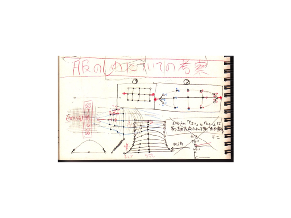
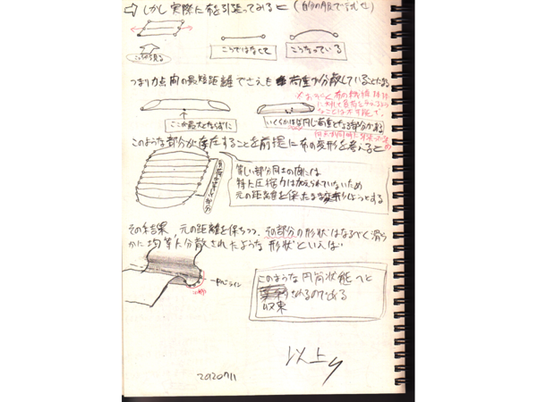
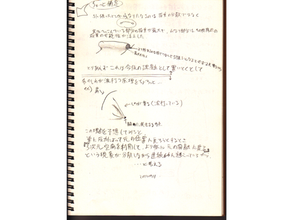

覚書考古学
ちょっと面白いメモを発掘したので、今回はそれを煮詰めていきます。そのメモには服の引っぱりジワができる原理について、布の繊維の一本単位にかかる張力まで視野に入れながら考察したことが描かれていました。しかし、そのときは良い閃きが続かずに仮説を立てた段階でストップしてしまいました。ですが、今こそその意思を継いで、布に引っぱりジワができる原理の仮説を、服のシワをデッサンする方法というところまで発展させる時です。
まずは、そのメモがとういうものだったかについて説明しようと思うのですが、何せ殴り書きのメモなので脈絡も適当で思いつくままに書かれています。なので、取りあえずはメモの内容を整った文章に書き起こして、そこから次に向かうべき方向を見いだすということにしましょう。何はともあれ原文をご覧下さい。






おそらくこんなにも読みにくいメモを最後まで読み通せる忍耐強さを持った人はいないでしょう。しかしこんなメモでも書いた本人にとっては、そのときの心境まで蘇るほどしっかりとニュアンスを書き留めているのです。それではメモの内容を抽出していきます。
シワができる原理のメモ解読
このメモの目次を作るとしたら下記のようになります。最初に布という材料がどう力を分散するかを考え、その性質故にシワが波打やすく、それは服のシワのでき方の参考になり、シワを発生させるキッカケは重力である、という思考過程を踏んでいます。ただし、全て思いつきの仮説で、実際に実験したり調べたわけではないので正しいかは分かりませんが。しかし、正しかろうがそうでなかろうがシワを描くための独自の根拠を持つことは悪い事ではありません。このシワはこういう理由でここにできているんだ、と自信を持って描ければそれは真実になると思います。元々それを目指して考えていたんだと思います。
画像1枚目。布に与えた張力の分散の仕方は、布の両端をつまんで引っ張ったときに、その力はどのように布の繊維を伝っていき、どのように布を変形させるのかということです。ここでは一枚の布にはどのように力が分布するのかを知る為にメッシュ（計算格子）を切り、布の表面に沿って等間隔で配置されている各頂点の移動距離の大きさで、元の位置に戻ろうとする反力を予測して変形の仕方を考えました。

画像2枚目。当然ながら引っ張っている部分が最も伸びて変形するのですが、それに連鎖して隣の頂点がゾロゾロと連なって変形していきます。すると、無理矢理引っ張って移動させられた頂点は元の位置に戻ろうと抵抗しますが、その程度の反力では布の両端をつまんでいる手はビクともしません。

画像3枚目。その結果、逆に元の位置を移動先の頂点に引き寄せることで解決しようとします。それが布を変形させる力の起原であり、シワができる原理です。

画像4枚目。ところが、布はゴムではないのでいくら張力を分散しようとしても仕切れません。分散仕切れずに余った張力をどうにかしてどこかに逃がそうと、布は変形しようとし続けます。

画像5枚目。そして「シワが波打つ原理」の項目では、布が見つけた新しい変形の仕方が円筒状になることだと書いています。具体的に言うと、ある材料に大きな圧縮力がかかっているとき、その力の方向が少しでも材料の中心軸からズレた瞬間から座屈変形が始まります。

画像6枚目。ちょっと無駄に専門的なのでもっと分かりやすくすると、ある材料に圧縮力がかかるとき、その材料を真っすぐ潰してぺっちゃんこにするには相当の大きさの力が必要になります。それなら、少しでも楽な方法として、潰すのではなく曲げてしまえばいいということです。そうすると、圧縮力を受けている材料が少しでも曲がって中心軸からズレてしまおうものなら、おそらくミミズのようにクニュッと曲がってしまうはずです。この現象が実際の布のどの部分に起こるのかというと、手で引っ張った点の周辺全域です。ここも同じようにクニュッと変形すると、布が上手いこと円筒状になるというわけです。

画像7枚目。「服にシワができる原理」の項目では、服にできるシワも基本的には全て円筒状の変形が集まってできていることを指摘しています。

画像8枚目左側。脇の部分に集中するシワも、肩から胴体に落ちるシワも、大小長短様々な円筒が構成しています。では、シワ単体ができる原理は分かりましたが、今度は全体としてはどのようなシワの分布になるかを考えなくてはなりません。大体はすぐに思いつきます。要するに人間が運動したときに曲げたり伸ばしたりする部分、つまり脇、肘、股、膝などに多くのシワができます。

画像8枚目右側。ですが実際にはほとんど捻っていない胴体や、ほとんどなびかせているスカートにもシワができます。そういった類いのシワは重力によって発生させられます。そこで最後に「重力でシワができる原理」の項目でもう一つのシワのでき方に着目します。先ほど張力の分布について考えていたのは「引っ張りジワ」についてでした。しかしこれは両端の固定端から張力を与えたときにできるシワということであり、重力によってできるシワは片方の端が自由な状態のことがほとんどです。つまり「重力シワ」は片方は固定端でもう片方は自由端のときにできるものだと言えます。そうすると張力の分散の仕方は自由端に向かっては収束せず、大きく広がって完全に分散しきってしまいます。それが、胴体にできる幅の広いシワであり、スカートにできる緩やかな波なのです。
このようにキレイに書き直してみると、過去のメモからはある大きな収穫があったと思えてきます。それは、シワができるのは張力と重力によってであり、その二種類の力はそれぞれ異なる端を持っている、という結論に至ったことです。このように言葉で表せれば考えやすいですし、何よりシワが始まる点と収束する点、もしくは収束せずに分散することがあることが分かりました。これはシワを描く上で、具体的な位置をイメージできる便利な考え方なのではないでしょうか。
で、どこに向かう？
ここまでに書いたように、結構丁寧に考察されているのでそのままメモの内容に従ってもいいかもしれません。ですが最も重要なのは、これをいかにしてお絵描きに生かすかということです。人体デッサンができるなら、おそらくそのポーズのエネルギーの流れや重心などは予想できるはずです。その躍動感を殺さずに服のシワを描くには、人物のポーズのエネルギーが布にどのような張力を与えるかをイメージして、それにここで立てた仮説を適用しながら、どこにどんなシワがどれくらい発生するかということを考えなければなりません。シワが円筒であることは分かりましたが、状況によって長さや太さ、できる量、または方向までもが異なってきます。仮説はすでに立ててあるので、次にやることは「シワの分類」です。分類の判断基準は、シワの形状に影響する要素の種類がどういう組合せなのかということです。それだと、布の材質、体の場所、かかる力、の三つの要素があれば十分なのではないでしょうか。


ではシワの分類をするにあたって、いくつのシワの種類を対象にすれば良いのか考えなければなりません。これについては、一般に服のシワの描き方の指南書で扱われているシワの種類を参考にして、それを分類していこうと思います。自分でシワの種類を考えてもいいのですが、そのためには色々な資料でデータを集め、それが間違いでないか吟味する手間がかかるし、一体何種類になってしまうのかも分かりません。というわけで、今回は『服のシワの描き方マスターブック』という売れ筋の本で扱われているシワの種類を対象に、服のシワの描き方を考えていこうと思います。